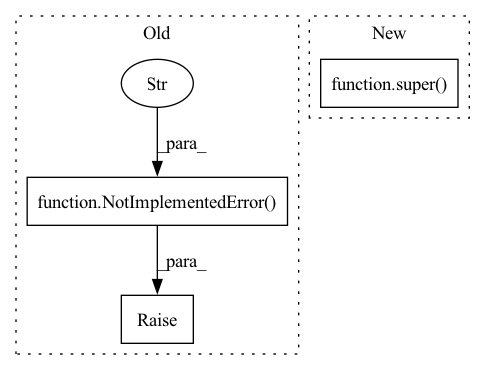

Pattern ID :41806
Before Change
If it"s a negative number, then it returns future frames
If it"s zero, then it act like object detection dataset, which means the methods will return unpacked data
raise NotImplementedError(
"This is a base class, should not be initialized!" )
def lidar_data(self,
idx: Union[int, Tuple[int, int]],
names: Optional[Union[str, List[str]]] = None,After Change
If it"s a positive number, then it returns adjacent frames with total number reduced
If it"s zero, then it act like object detection dataset, which means the methods will return unpacked data
super() .__init__(base_path, inzip=inzip, phase=phase,
trainval_split=trainval_split, trainval_random=trainval_random)
self.nframes = abs(nframes)
In pattern: SUPERPATTERN
Frequency: 3
Non-data size: 3
Instances Fragment ID: 117202444
Project Name: cmpute/d3d
Commit Name: 0e26aff64868b1abc14c8c18a7f1338968ae0e74
Time: 2020-11-13
Author: cmpute@qq.com
File Name: d3d/dataset/base.py
M Class Name: TrackingDatasetBase
N Class Name: TrackingDatasetBase
M Method Name: __init__(7)
N Method Name: __init__(7)
M Parent Class: DetectionDatasetBase
N Parent Class: DetectionDatasetBase
M File Name: d3d/dataset/base.py
N File Name: d3d/dataset/base.py
M Start Line: 149
M End Line: 169
N Start Line: 162
N End Line: 186
Before Change
// Preload all the elements you are going to need at inference.
// For instance your model, processors, tokenizer that might be needed.
// This function is only called once, so do all the heavy processing I/O here
raise NotImplementedError(
"Please implement TokenClassificationPipeline __init__ function"
)
def __call__(self, inputs: str) -> List[Dict[str, Any]]:
Args:After Change
self,
model_id: str,
):
super() .__init__(model_id)
def __call__(self, inputs: str) -> List[Dict[str, Any]]:
Fragment ID: 117202445
Project Name: huggingface/huggingface_hub
Commit Name: b165bb655f8470290807947ac879d215bb3b0d1f
Time: 2021-08-03
Author: osanseviero@users.noreply.github.com
File Name: api-inference-community/docker_images/generic/app/pipelines/token_classification.py
M Class Name: TokenClassificationPipeline
N Class Name: TokenClassificationPipeline
M Method Name: __init__(2)
N Method Name: __init__(2)
M Parent Class: Pipeline
N Parent Class: Pipeline
M File Name: api-inference-community/docker_images/generic/app/pipelines/token_classification.py
N File Name: api-inference-community/docker_images/generic/app/pipelines/token_classification.py
M Start Line: 15
M End Line: 17
N Start Line: 11
N End Line: 11
Before Change
- "score": A score between 0 and 1 describing how confident the model is for this entity.
// IMPLEMENT_THIS
raise NotImplementedError(
"Please implement TokenClassificationPipeline __call__ function"
)
After Change
- "end": the ending offset within `input` leading to `answer`. context[start:stop] === word
- "score": A score between 0 and 1 describing how confident the model is for this entity.
return super() .__call__(inputs)
Fragment ID: 117202443
Project Name: huggingface/huggingface_hub
Commit Name: b165bb655f8470290807947ac879d215bb3b0d1f
Time: 2021-08-03
Author: osanseviero@users.noreply.github.com
File Name: api-inference-community/docker_images/generic/app/pipelines/token_classification.py
M Class Name: TokenClassificationPipeline
N Class Name: TokenClassificationPipeline
M Method Name: __call__(2)
N Method Name: __call__(2)
M Parent Class: Pipeline
N Parent Class: Pipeline
M File Name: api-inference-community/docker_images/generic/app/pipelines/token_classification.py
N File Name: api-inference-community/docker_images/generic/app/pipelines/token_classification.py
M Start Line: 33
M End Line: 35
N Start Line: 26
N End Line: 26